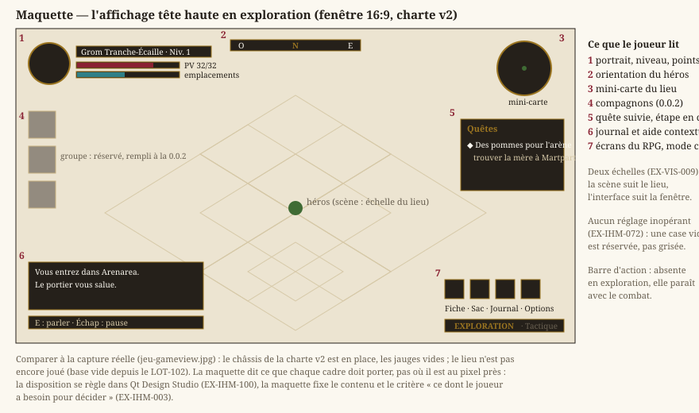
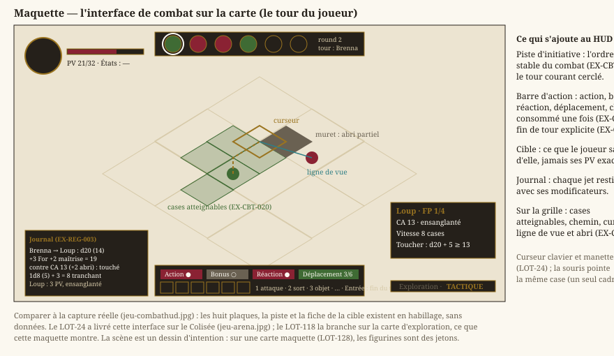
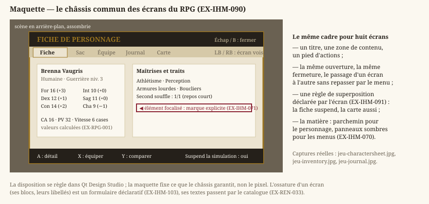
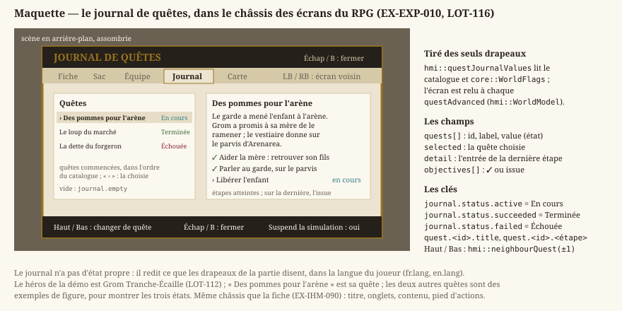
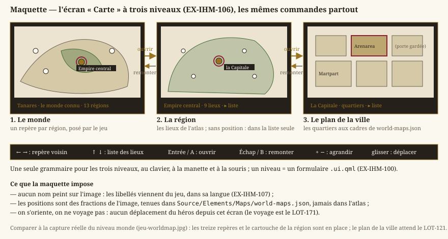

Interface utilisateur (IHM)
Statut : livré. Écrans du jeu en Qt Quick, éditeur de cartes en Qt Widgets, charte v2 des écrans du jeu.
Révisée au
LOT-EDITOR-01(décision D7 de la feuille de route de l'éditeur). L'éditeur est un outil interne : style Fusion de Qt, textes anglais écrits dans le code, widgets construits en code, sans charte ni thème. Les exigences qui ne visaient que son habillage et l'agencement de ses panneaux sont retirées ; son agencement se décide lot par lot dans sa feuille de route. Ce qui reste ici de l'éditeur : un binaire Qt Widgets à part (EX-IHM-041), une disposition persistée (EX-IHM-011), la gestion des cartes sans perte (EX-IHM-021) et l'unicité des commandes (EX-IHM-062). Dépend derendu-technique.mdetediteur-niveaux.md.
L'interface — écrans du jeu, éditeur de cartes — est distincte de la scène : celle-ci est dessinée sur QRhi (EX-REN-002) ; l'interface, elle, repose sur Qt, pour une application maintenable, à fenêtres réglables. Core demeure indépendant de la présentation (EX-NFR-010).
1. Socle applicatif
- EX-IHM-001 — Toute l'interface (écrans du jeu, éditeur) doit reposer sur le framework Qt ; seule la scène se dessine par le pipeline 2D du projet, sur QRhi.
- EX-IHM-002 — La scène doit être embarquée dans un élément Qt (
EX-REN-050), sans processus séparé ni duplication du pipeline de rendu ; le déterminisme de la simulation (EX-NFR-002) et la latence d'entrée (EX-CTRL-020) sont préservés. - EX-IHM-003 — Le jeu doit afficher, dans la scène rendue, un affichage tête haute minimal indiquant l'état dont le joueur a besoin pour décider, et lui seul. L'affichage passe par le catalogue de traduction (
EX-REN-033) et n'a aucun effet sur le gameplay (EX-ARCH-012). > Refondue auLOT-67. Elle énumérait ce contenu, et la liste ne convenait plus. Ce que > doit y lire un joueur de RPG (points de vie, initiative, actions restantes) est le sujet de l'IHM de combat du >LOT-24; l'exigence garde donc son critère — ce dont le joueur a besoin pour décider — et > cesse d'en fixer la liste, que chaque lot ajusterait sinon en la contredisant.
Le critère d'EX-IHM-003 — ce dont le joueur a besoin pour décider — se juge sur pièces, et les deux maquettes ci-dessous sont ces pièces. Elles ne réintroduisent pas la liste que l'exigence a retirée : elles montrent, pour chacun des deux modes, ce qu'un joueur doit pouvoir lire sans ouvrir d'écran. Ce qu'elles fixent est le contenu, jamais la position au pixel près.
{kind=link}

En exploration, la barre d'action est absente : elle n'apparaît qu'avec le combat. Et la case du groupe, que la version 0.0.2 remplira, est réservée plutôt que grisée — un réglage inopérant coûte plus de confiance qu'il n'apporte d'information (EX-IHM-072).
{kind=link}

En combat s'ajoute exactement ce que le tour rend décidable : l'ordre stable (EX-CBT-010), les quatre ressources consommables une fois (EX-CBT-011), la fin de tour explicite (EX-CBT-012), et les aides de grille (EX-CBT-020, EX-CBT-021). La cible montre ce que le joueur sait d'elle — « ensanglanté », pas un nombre de points de vie que rien ne lui a appris.
- EX-IHM-004 — Le jeu doit offrir un écran de pause suspendant réellement la simulation, sans consommer de pas de temps fixe, navigable au clavier, à la souris et à la manette comme le reste de l'interface, et passant par le catalogue de traduction (
EX-REN-033). DétailleEX-REN-031du côté de l'interface. > Refondue auLOT-67. Elle exigeait aussi un écran de fin de niveau, qui n'a plus > d'objet : un bac à sable n'a pas de tableau à terminer. L'écran de pause, lui, reste — et > s'étoffera des entrées du RPG (fiche, inventaire, journal, carte) avec le châssis duLOT-68, > pas avant : une entrée de menu qui ne mène nulle part coûte plus de confiance qu'elle > n'apporte d'information (EX-IHM-072).
2. Éditeur
- EX-IHM-011 — La disposition des panneaux de l'éditeur doit être persistée (sauvegardée et restaurée entre deux sessions), et réinitialisable à une disposition par défaut.
3. Gestion des cartes
- EX-IHM-021 — L'éditeur doit permettre de créer, renommer, dupliquer et supprimer une carte, avec validation de nom (
EX-EDIT-006) et confirmation des actions destructrices ; aucune modification non enregistrée ne doit être perdue silencieusement.
4. Menus, options, unification
- EX-IHM-040 — Le menu principal et l'écran Options (plein écran, volume, langue
EX-REN-033) doivent être fournis en Qt Quick, navigables au clavier, à la souris et à la manette. - EX-IHM-041 — Chaque exécutable doit reposer sur une seule technologie d'UI — Qt Quick pour le jeu, Qt Widgets pour l'éditeur — et aucun écran ne se dessine à la main au
SpriteBatch.
5. Système de design et habillage
La première interface Qt était fonctionnelle, sans jamais traiter son apparence pour elle-même. L'application n'a jamais choisi de style Qt : elle s'exécute donc sur le style natif de la plate-forme, qui dessine la plupart des contrôles hors du contrôle de l'application et ignore une large part de toute feuille de style posée par-dessus. C'est la raison pour laquelle le thème existant a dû être restreint au menu principal et à la page Options (portée par objectName) au lieu d'être étendu : l'étendre ne produisait pas un résultat homogène. Il en résulte deux apparences dans la même fenêtre — écrans thématisés d'un côté, panneaux de l'éditeur au rendu natif de l'autre — et des grandeurs d'habillage (couleurs, marges, tailles de vignettes, largeurs) éparpillées entre la feuille de style, les fichiers de description d'interface et des constantes locales à chaque widget.
- EX-IHM-050 — L'interface hors-jeu doit reposer sur un style d'interface maîtrisé par l'application (et non sur le style natif de la plate-forme), assorti d'un thème unique externalisé couvrant l'ensemble des widgets — fenêtre, panneaux dockables, barres de menus et d'état, onglets, arbres et tables, champs de saisie, barres de défilement, infobulles, boîtes de dialogue standard — et non un sous-ensemble d'écrans. Ce thème distingue deux portées : une part invariante, qui porte l'identité visuelle du jeu (menu principal, Options, jeu), et une part variable, le châssis d'édition. L'état de focus doit rester visible en toute circonstance : la navigation à la manette dans les menus repose sur le parcours de focus (
EX-IHM-040), qu'un focus invisible rend inutilisable. > Précisée auLOT-EDITOR-01. L'éditeur n'est plus dans sa portée : outil interne, il prend > le style Fusion de Qt tel quel.EX-IHM-051à053etEX-IHM-082ne visent plus, eux aussi, > que les écrans du jeu. - EX-IHM-051 — Les grandeurs d'habillage (couleurs, espacements, tailles d'icônes et de vignettes, largeurs de contrôles) doivent provenir d'une source unique, dont dérivent à la fois la palette de l'application, la feuille de style et la couleur d'effacement du viewport — cette dernière étant aujourd'hui définie indépendamment, d'où une couture visible entre le canevas Direct3D 11 et les widgets qui l'entourent. Aucune constante de style ne doit subsister en dur dans le code des widgets.
- EX-IHM-052 — La typographie doit avoir une source de vérité unique (et non partagée entre feuille de style et fichiers de description d'interface), et reposer sur une police embarquée avec l'application, avec repli sur une famille générique si elle est absente — l'interface ne doit dépendre d'aucune police installée sur le système hôte.
- EX-IHM-053 — Les icônes et vignettes de l'interface doivent rester nettes à toute échelle d'affichage (facteur de mise à l'échelle du système). Une icône des écrans du jeu est une image produite comme les ornements (
EX-IHM-075), depuis une entrée du cahier des assets du LOT-87, à deux fois sa plus grande taille d'affichage à 1080p, et réduite avec lissage. Une vignette d'asset est agrandie selon la nature de l'image qu'elle représente (EX-ARCH-022) — au plus proche voisin pour une tuile pixellisée, interpolée pour une illustration peinte. > Refondue auLOT-66. Elle imposait l'absence de lissage pour toutes les vignettes, au > motif qu'elles représentent du pixel art. Une vignette de panneau peint (LOT-76) > agrandie au plus proche voisin serait crénelée, et la bibliothèque d'assets montrerait alors > une image que le jeu ne rend pas ainsi — la vignette cesserait d'être un aperçu. > > Refondue auLOT-87. Elle voulait toutes les icônes vectorielles. Les icônes de la > charte v2 sont des émaux et des gravures d'or en relief : tracées, elles formeraient une > troisième direction graphique, la faute queEX-IHM-075écarte déjà pour les ornements. La > netteté reste l'objet de l'exigence ; elle est tenue autrement — une icône est la plus petite > pièce d'un écran, donc la première qu'un agrandissement au-delà de 1080p abîme, et c'est pourquoi > elle seule est produite au double de sa taille d'affichage.
6. Architecture de l'information
Depuis le LOT-EDITOR-01, l'agencement de l'éditeur (panneaux, barre d'état, barre d'outils) se décide lot par lot, dans la filière editeur du planning ; une seule règle reste commune.
- EX-IHM-062 — Un même état ou une même commande ne doit être exposé qu'à un seul endroit de l'interface, raccourci clavier compris : deux contrôles pilotant la même valeur peuvent diverger et obligent l'utilisateur à deviner lequel fait autorité. Un raccourci clavier reste un second chemin légitime vers une commande, à condition d'être affiché par la commande elle-même plutôt que dupliqué en contrôle distinct.
7. Identité visuelle des écrans du jeu
Le système de design a donné à l'interface un habillage cohérent, mais générique : la portée identité et le châssis d'édition partagent la même police et la même échelle typographique, si bien que rien, à l'écran, ne distingue le menu d'un jeu du panneau d'un outil de travail. Les titres sont fixés à 32 pt et les entrées de menu à 16 pt quelle que soit la taille de la fenêtre, ce qui donne une interface visiblement petite dès qu'on dépasse la définition d'un ordinateur portable. Et le focus n'est signalé que par un changement de teinte — suffisant à la souris, insuffisant à la manette, qui n'a pas de pointeur pour dire où elle en est.
- EX-IHM-070 — Les écrans du jeu doivent porter la charte v2 du LOT-87, qui tient en deux matières : des panneaux sombres cerclés d'un filet d'or (menu principal, options, crédits, carte, HUD) et le parchemin de Tanares (fiche de personnage, inventaire, équipe, compétences, dialogue, marchand). Le grenat et l'or en sont les accents communs. Les titres se composent en
Cinzel, le corps et les citations enIM Fell English— deux polices embarquées avec l'application (repli sur une famille générique si elle est absente,EX-IHM-052). Les teintes sont relevées, jamais choisies à vue : une couleur inventée ressemble à la source sans en venir, et rien ne le dit jamais. Le parchemin, l'encre, l'or et le grenat restent relevés sur le corpus (LOT-66) ; les rôles propres à la v2 — panneaux sombres, texte sur panneau, plaques d'action — ont été relevés sur les maquettes de référence du lot, rôle par rôle, la maquette et la zone mesurée consignées dans la fiche duLOT-87. Les grandeurs de l'habillage suivent un facteur d'agrandissement réel, rapport de la fenêtre à la définition de conception de 1920 × 1080. Le viewport de la scène suit sa propre règle, lui aussi à facteur réel (EX-REN-013). Cette identité est bornée aux écrans du jeu — le châssis d'édition conserve son apparence d'outil de travail, et ni parchemin ni panneau doré ne se répand dans ses tables et ses arbres denses. > Précisée auLOT-101. La scène quitte le pixel art à son tour : elle est peinte en haute > définition (EX-VIS-008). La frontière que traceEX-VIS-009ne sépare donc plus deux > factures mais deux échelles — une pièce de scène se mesure au lieu, une image d'interface à > la fenêtre — et le facteur entier du viewport disparaît avec le pixel art (EX-REN-013). > > Refondue auLOT-87. Elle décrivait le seul parchemin, en polices pixel (Pixelify Sans, >Press Start 2P), agrandi d'un facteur entier : à 1,5×, le trait et le filet d'un > encadrement tracé s'arrondissaient tous deux à la même épaisseur et la réserve de parchemin qui > les sépare disparaissait. Cette raison tombe avec la v2, dont les cadres sont des images > 9-patch produites à 1080p (EX-IHM-075) : aucun filet d'un pixel n'est plus tracé, et une > image s'échantillonne à tout facteur. Les polices pixel sont écartées pour la raison que le >LOT-66donnait déjà contre le pixel art — une police bitmap et une illustration peinte ne > cohabitent pas —, et que les maquettes rendent visible. La v1 et la v2 coexistent le temps de la > phase 3 du lot ; les jetons de la v1 y sont marqués obsolètes. > > Refondue auLOT-66. Elle imposait une identité pixel art — police bitmap, bordures > franches, aucun lissage — héritée des premiers lots du moteur. Elle entrait en > contradiction frontale avec les références du jeu visé : une police bitmap non lissée et une > illustration peinte à 300 ppp ne cohabitent pas. Le LOT-01 avait délibérément > conservé l'atelier pixel art ; ce renversement est assumé, pas subi. - EX-IHM-071 — L'élément focalisé d'un écran du jeu doit être signalé par une marque explicite (curseur), et non par la seule teinte : la navigation à la manette (
EX-IHM-040) repose entièrement sur le parcours de focus, qu'une simple nuance de couleur rend difficile à suivre — et impossible pour un joueur qui distingue mal les couleurs. Une feuille de style ne sachant pas ajouter de contenu, cette marque est nécessairement peinte par le contrôle. - EX-IHM-072 — Aucun écran ne doit exposer de réglage inopérant. Un contrôle grisé et non branché coûte plus de confiance qu'il n'apporte d'information : il se retire, ou il se branche. Symétriquement, une capacité qui existe déjà (comptage de cadence, bascule de rendu) s'expose comme réglage plutôt que de rester derrière une touche non documentée — sans jamais en faire un second état (
EX-IHM-062).
- EX-IHM-075 — L'habillage ornemental des écrans du jeu — cadres, plaques, bandeaux, boutons, médaillons — est livré en images produites à la définition de conception (1920 × 1080), chacune décrite par une entrée du cahier des assets du LOT-87 : dimensions, marges, états, prompt de génération, et la maquette qui la montre. Jamais découpé des maquettes elles-mêmes, qui restent des relevés de cotes. Les trois raisons qui imposaient autrefois le tracé deviennent trois conditions que chaque pièce doit tenir :
- elle s'étire honnêtement. Une pièce étirable (cadre, plaque, bandeau, jauge) déclare ses marges 9-patch, et seule sa partie centrale et ses bords s'étirent — jamais ses coins. Une pièce qui ne le peut pas (médaillon, sceau, cabochon) a une taille fixe multipliée par le facteur, et ne se déforme pas : un médaillon ne s'ovalise pas pour tenir dans une case basse ;
- ses couleurs sont celles des jetons. Le prompt de chaque pièce impose la palette relevée (
EX-IHM-070), la réception d'une image la vérifie, et tout ce qui n'est pas image — texte, remplissage de jauge, état de focus — prend sa couleur dansTokens.qml(EX-IHM-051) ; - elle reste nette au facteur de conception et en deçà. Produite à 1080p, elle est réduite avec lissage sur une fenêtre plus petite ; au-delà de 1080p, elle est agrandie, et c'est la limite assumée de la v2.
Un écran ne dépend d'aucune de ces images pour être utilisable : une pièce absente retombe sur un aplat des jetons (EX-NFR-040), jamais sur un vide.
Refondue au
LOT-87. Elle imposait le tracé par le code, jamais l'image. Les géométries relevées sur le corpus (hmi::parchmentFrameStrokes,hmi::cabochonShapes,hmi::titleBannerShapes) et leurs portages enShapeont tenu ce contrat pour la v1. La v2 montre des filigranes d'or en relief, des plaques à grain et des éclats qu'aucun tracé ne rend de façon crédible : les tracer aurait produit une troisième direction graphique, ni la v1 ni les maquettes. Les trois raisons de la version précédente, ci-dessous, n'ont pas été jugées fausses — elles sont gardées comme conditions. Le tracé v1 disparaît au T5.2 du lot, avec les écrans qui l'emploient.Texte de la version précédente — l'habillage ornemental des écrans du jeu — encadrements, cabochons, bandeaux de titre — doit être tracé par le code, jamais livré en image. C'est le prolongement d'
EX-IHM-070, et la raison n'est pas la place que prendraient ces fichiers. (1) Une image ne s'étire pas honnêtement. Un cabochon posé sur un panneau bas s'ovalise ou mange le tiers de sa hauteur ; un bandeau étiré déforme ses ailes. Un ornement tracé se redessine à la taille demandée, et ses ailes peuvent suivre la hauteur quand sa plaque suit la largeur — ce qu'aucun découpage en tranches ne sait faire. (2) Une image fige ses couleurs hors des jetons (EX-IHM-051) et devrait être réexportée à chaque retouche de palette. Une forme tracée porte un rôle, jamais une teinte. (3) Une image ne suit pas le facteur d'agrandissement (EX-IHM-081) : elle est nette à un seul facteur, un tracé l'est à tous.Ce que le corpus apporte n'est donc pas de la matière mais de la mesure : les proportions et les teintes de ces ornements sont relevées sur
Documentation/SourceBook/, jamais choisies à vue — même règle qu'EX-IHM-070pour la palette, et même raison.Ajoutée au
LOT-76.EX-IHM-070imposait déjà de relever les couleurs sur le corpus, mais rien n'était écrit des formes : leLOT-66avait donc pu conclure, à juste titre pour son périmètre mais sans que rien ne le garantisse au-delà, qu'aucun fichier d'image ne serait livré. Cette exigence tranche l'autre moitié de la question, et écarte explicitement la voie du découpage d'images — essayée, puis abandonnée auLOT-76.
- EX-IHM-076 — Une illustration d'interface — fond d'écran, carte, portrait — est produite, jamais extraite : elle vient d'une entrée du cahier des assets du LOT-87, comme les ornements (
EX-IHM-075). Le plan de la ville, la carte du monde et les planches du corpus sont des œuvres : le jeu ne les affiche pas, et ses écrans ne les recopient pas — une carte est produite ou peinte pour le jeu, jamais reprise du livre. Ce qui est interdit, c'est l'image extraite du corpus et l'image sans provenance — venue d'ailleurs, retouchée à la main, ou produite hors du cahier. Les cartes de l'écran « Carte » (EX-IHM-106) sont peintes par l'auteur, hors du cahier : elles ont leur dossier (Source/Elements/Assets/Maps/), leur manifeste — provenanceauthor, fichier d'origine, date, dimensions, empreinte — et leur contrôle (check_map_assets.py), qui refuse de même toute autre provenance. Trois obligations en découlent :- une illustration produite déclare l'entrée du cahier, le prompt tel qu'envoyé et la date ; toute autre provenance,
tanaresen tête, est refusée par l'intégration continue (check_ui_assets.py, depuis leLOT-94) ; - ce qui est livré est décrit par un manifeste — dimensions, empreinte, provenance — que l'intégration continue recoupe avec les fichiers et avec le code qui les nomme ;
- une illustration absente est un cas attendu (
EX-NFR-040) : l'écran retombe sur un aplat des jetons. Aucun écran ne doit dépendre d'un binaire pour s'afficher. Un filigrane ou un folio présent sur la page source se recadre, jamais ne s'efface : l'effacer demanderait de repeindre ce qu'il recouvre, c'est-à-dire d'inventer des pixels. > Refondue auLOT-87. Elle n'admettait que l'extraction du corpus, et opposait l'illustration > à l'ornement tracé. L'ornement étant désormais produit (EX-IHM-075), la frontière ne passe plus > entre « tracé » et « image » mais entre image avec provenance et image sans. La > provenanceproduceddu manifeste et son contrôle sont le T2.5 du lot.
- une illustration produite déclare l'entrée du cahier, le prompt tel qu'envoyé et la date ; toute autre provenance,
8. Taille, réactivité et réglages effectifs
Les sections précédentes ont donné à l'interface son châssis, son habillage et sa répartition de l'information. Aucune n'a jamais dit qui décide de la taille de la fenêtre. La réponse, de fait, était : le plus dense des écrans. QStackedWidget::minimumSizeHint valant le maximum sur toutes ses pages — y compris celles qu'on ne regarde pas — un seul écran chargé fixait le plancher de la fenêtre entière ; et ce plancher était multiplié par le facteur d'agrandissement d'EX-IHM-070, lui-même dérivé de la hauteur de la fenêtre. La boucle se refermait sur elle-même, sans que rien ne la borne : la fenêtre grandissait, le facteur montait, le plancher montait, la fenêtre grandissait. Windows finissait par refuser la géométrie, et l'interface débordait sous la barre des tâches en rognant son contenu, sans rien dire. Le défaut s'est produit trois fois, et a été corrigé deux fois écran par écran.
Symétriquement, une préoccupation vivait à une portée plus large que la sienne. Le facteur d'agrandissement, qui ne concerne que les écrans du jeu, était substitué dans la feuille de style de l'application : en changer repolissait ses 862 widgets, cinq secondes durant en configuration Debug. Et un écran exposait des réglages que rien ne transmettait au moteur.
- EX-IHM-080 — Aucun écran ne doit contraindre la taille de la fenêtre : il s'y adapte, au besoin en défilant, et ne rogne jamais son contenu sans recours. Cette garantie doit être portée par le chemin d'ajout commun des écrans, et non par une convention à réappliquer dans chaque fichier de description d'interface : une règle qu'il faut se rappeler d'appliquer se reperd au premier écran ajouté — c'est déjà arrivé deux fois.
- EX-IHM-081 — Les facteurs d'agrandissement (
EX-IHM-070) — l'entier du viewport comme le réel de la charte v2 — doivent être bornés par la zone d'affichage disponible, et non par la seule hauteur de la fenêtre ; la géométrie restaurée d'une session précédente doit être ramenée dans cette même zone, position et taille. Un facteur dérivé d'une hauteur que lui-même fait croître n'a pas de point fixe : la borne doit venir d'une grandeur dont l'application ne décide pas. > Précisée auLOT-87, qui ajoute le facteur réel : dérivé de la fenêtre, lui-même bornée par > l'écran, et d'aucun contenu (EX-IHM-080), il n'ouvre pas de nouvelle boucle. - EX-IHM-082 — Une préoccupation limitée à une portée ne doit jamais provoquer un rejeu de style d'une portée plus large : un habillage s'applique là où il porte, et nulle part ailleurs. (Le châssis d'édition, seconde portée d'
EX-IHM-050, n'a plus de feuille depuis leLOT-EDITOR-01.) Le coût d'un changement d'habillage doit rester proportionnel à ce qui change réellement. - EX-IHM-083 — Tout réglage exposé par un écran doit atteindre le moteur, ou ne pas être exposé ; et l'écran doit ouvrir sur les valeurs par défaut du moteur, jamais sur une seconde liste de valeurs inscrite dans sa description. Un réglage inerte est pire qu'un réglage absent : il se règle, il s'enregistre, et il ment.
9. Le châssis des écrans du RPG (LOT-68)
Huit écrans manquent au jeu — fiche de personnage, inventaire et équipement, journal de quêtes, carte du monde, dialogue, marchand, tableau de la Guilde, affichage tête haute de combat — et quatre lots à venir les remplissent chacun de leur côté (LOT-38, LOT-42, LOT-45, LOT-24). Sans règle commune, ces quatre lots produiraient quatre écrans qui s'ouvrent différemment, se ferment différemment et se naviguent différemment : le défaut ne se voit sur aucun d'eux pris isolément, et sur les quatre ensemble il n'est plus rattrapable sans les refaire.
{kind=link}

La maquette fixe ce que le châssis garantit — un titre, un contenu, un pied d'actions, le même va-et-vient entre écrans, une règle de superposition déclarée — et non la position au pixel près, qui se règle dans Qt Design Studio.
- EX-IHM-090 — Les écrans du RPG — fiche, compétences, inventaire, journal, carte du monde, dialogue, marchand, compagnie, affichage tête haute de combat — doivent partager le même cadre et la même navigation : chacun est un formulaire QML de
Jadg.Ui(Source/Ui/Screens/*Form.ui.qml) posé dans la pile d'écrans (ScreenStack) quand le routeur le désigne (hmi::ScreenRouter::openRpgScreen), et refermé sur l'écran d'où il a été ouvert — menu, jeu ou pause —, provenance que la table de transitions retient (rpgReturnTo). Ils partagent le même parcours de focus à la manette (EX-IHM-071) et leurs textes passent par le catalogue de traduction (EX-REN-033). Le C++ ne connaît d'eux que leur nom (hmi::RpgScreenId) : ajouter un écran, c'est un formulaire, son jumeau de câblage et une valeur de cette énumération, jamais une retouche des autres. > Précisée le 25 septembre 2026. L'ossature en données de chaque écran (hmi::rpgScreens) > et le cycle d'un écran à l'autre aux gâchettes (nextRpgScreen/previousRpgScreen), écrits > auLOT-68pour un rendu générique par widgets, sont retirés : depuis leLOT-86, la mise en > page vit dans les formulaires, et LB/RB servent aux onglets de la carte du monde et aux > actions du combat. - EX-IHM-091 — Ce qu'un écran fait de la simulation quand il recouvre la carte doit tenir à un seul mécanisme, jamais à une décision prise au point d'appel : la vue de jeu (
GameView.qml) relâche les directions tenues dès qu'un écran lui prend le focus — le héros s'arrête —, le dialogue et le combat gèlent la session (hmi::WorldModel::setFrozen,core::ExplorationSession::freeze), et la vue la dégèle quand elle reprend le focus, sauf si un combat est en cours, qui la tient gelée jusqu'à son issue. Les écrans de fin (mort, fin de la démo) ferment la partie : la table de transitions n'en offre aucun retour à la carte. Ouvert depuis la pause, depuis le jeu ou depuis une touche, un même écran se comporte donc de la même façon. > Précisée le 25 septembre 2026. La règle n'est plus déclarée écran par écran dans une > table (hmi::RpgSuperposition,hmi::pausesGame, retirés) : elle est portée par le focus > (onActiveFocusChangedde la vue de jeu) et par la table de transitions (hmi::ScreenFlow), > que les tests deScreenFlowet d'EncounterModelvérifient.
Le journal de quêtes
Premier écran du châssis à être alimenté par la partie (LOT-116), le journal montre ce que le châssis promet quand une donnée réelle le remplit.
{kind=link}

Ce que la maquette engage : l'écran se tire des seuls drapeaux (EX-EXP-010, EX-EXP-012), il n'a pas d'état à lui, et il se relit à chaque avancement — une quête qui progresse pendant qu'on lit le journal s'y voit sans le fermer.
10. La conception séparée du code (LOT-86)
Statut : en cours (
LOT-86). Cette section remplace, pour les écrans du jeu, ce que la section 9 confiait à une description en données. Le châssis d'édition (sections 5, 6 et 8) n'est pas concerné : il reste en Qt Widgets, dans son propre binaire.
Ce qui a changé, et pourquoi
Les écrans du jeu étaient en Qt Widgets, décrits par une table C++ — l'ossature en données que la première rédaction d'EX-IHM-090 exigeait, et que le LOT-86 a rendue sans objet. Une tentative de les porter sur des fichiers Qt Designer a été menée puis abandonnée : elle demandait 1 268 lignes d'outillage — plugin de widgets promus, résolveur de feuille de style, générateur de .ui — dont l'unique fonction était de rendre ces fichiers visualisables dans le designer. Les deux formes partageaient le même défaut : la mise en page vivait du côté du code. Une retouche d'apparence demandait un développeur, une compilation, et une relecture — pour déplacer un bloc de huit pixels.
Le prix s'est vu deux fois. Le défaut du plancher de taille des écrans s'est produit trois fois avant qu'EX-IHM-080 ne le déplace sur un chemin commun. Et la palette d'identité a été écrite deux fois — en CSS dans les maquettes, en C++ dans les jetons — tenue par un contrôle dont le commentaire disait qu'auparavant « rien ne les reliait ».
Les écrans du jeu passent donc à Qt Quick, et leur mise en page à des fichiers que Qt Design Studio ouvre, modifie et réenregistre. Ce n'est pas un changement de bibliothèque : c'est un déplacement de la frontière entre deux métiers.
La frontière, telle qu'elle est tenue
- EX-IHM-100 — Une modification purement visuelle d'un écran du jeu — mise en page, couleurs, typographie, ornements, animations, textes — doit être réalisable sans modifier ni recompiler une ligne de C++, depuis Qt Design Studio ouvrant
Source/Ui/JadgUi.qmlproject. Ce projet ne décrit queSource/Ui, les jumeaux de câblage et les assets : ni CMake, niSource/HMI, ni code. La frontière n'est pas une consigne de relecture, c'est le périmètre d'un fichier. Depuis leLOT-87,Source/Uiest un module QML sans C++ (Jadg.Ui) : c'est ce qui le rend résolvable par l'atelier, dont le marionnettiste ne charge aucun plugin du projet ; les types C++ forment un module à part (Jadg.Runtime) que seuls les jumeaux importent, et que l'atelier remplace par des doublures QML (Source/Ui/Mocks). - EX-IHM-101 — La couche de présentation (
Source/HMI/Presentation, et les vues-modèles deSource/HMI/Runtimeexposées au QML) transforme l'état du jeu en données affichables et ne dessine rien : elle ne connaît ni Qt Quick, ni Qt Widgets. Seule exception, nommée : la surface de rendu (GameViewportItem), qui est un item de scène et non un modèle. Un écran lui demande ce que le jeu sait dire, jamais comment le montrer. Un seul en-tête d'IHM qui y entrerait signalerait que la logique de vue a commencé à redescendre dans la couche de données — et c'est ainsi que les 2 472 lignes deMainWindow.cppse sont accumulées. - EX-IHM-102 — L'exécutable du jeu ne lie pas
Qt6::Widgets. Ce n'est pas une convention mais une impossibilité : un widget qui y réapparaîtrait ferait échouer l'édition de liens. Les widgets n'appartiennent qu'à l'éditeur de cartes, binaire séparé. - EX-IHM-103 — Tout écran et tout contrôle du jeu est un formulaire
.ui.qml— le sous-ensemble déclaratif de QML — et ne contient aucun code impératif. Qt Design Studio relit et réenregistre ces fichiers : ce qu'il n'y comprend pas, il le perd, sans avertir. La logique vit dans un fichier jumeau.qml, côté développeur. La règle ne vise donc pas le style, mais ce que l'outil détruirait. - EX-IHM-104 — Un formulaire n'importe que des modules connus à la fois de l'installation Qt et de Qt Design Studio. Le designer livre les siens (
QtQuick.Studio.*), absents d'une installation ordinaire : un formulaire qui en importerait s'ouvrirait parfaitement chez la conception et casserait le jeu — le pire des deux mondes, découvert le plus tard possible. - EX-IHM-105 — Aucune couleur, famille de police ni taille de texte n'est écrite en dur hors de
Source/Ui/Theme. C'est ce qui donne son sens aux jetons : une valeur écrite dans un écran survit à un changement de palette, ne suit plus rien, et personne ne remarque qu'un seul écran a cessé de ressembler aux autres (EX-IHM-051).
Les ornements restent tracés, et EX-IHM-075 avec eux
Section du
LOT-86, conservée telle quelle : elle décrit la v1. AuLOT-87,EX-IHM-075est refondue — les ornements de la charte v2 sont des images produites, sous trois conditions.
Le passage à Qt Quick a d'abord semblé condamner EX-IHM-075 — « l'habillage ornemental se trace, il ne se livre pas en image » —, puisqu'une règle qui place le dessin dans du code place aussi l'apparence hors de portée de la conception.
C'est faux, et l'erreur méritait d'être corrigée plutôt que suivie. Les trois raisons que cette exigence invoque tiennent toujours : une image ne s'étire pas honnêtement (un cabochon posé sur un panneau bas s'ovalise), elle fige ses couleurs hors des jetons (EX-IHM-051), et elle ne suit pas le facteur d'agrandissement entier (EX-IHM-081) — nette à un seul facteur, floue aux deux autres.
Or Qt Quick Shapes honore les trois : une forme s'y redessine à la taille demandée, prend ses couleurs de Tokens.qml, et reste nette à tous les facteurs. Et une Shape déclarative s'édite dans Qt Design Studio comme le reste.
Ce qui change n'est donc pas « tracé par du code » mais « tracé par du C++ ». La géométrie pure relevée sur le corpus (hmi::parchmentFrameStrokes, hmi::cabochonShapes, hmi::titleBannerShapes) reste la source de ce portage, et n'est pas jetée en attendant : la redessiner plus tard, sans se souvenir de ce qui avait été relevé, coûterait bien plus que de la conserver.
Ce qui rend ces exigences autre chose que des intentions
scripts/checks/check_ui_layers.py les vérifie toutes à chaque Pull Request, et vérifie en outre qu'EX-ARCH-001 et EX-NFR-010 restent vraies — Core sans un seul en-tête Qt. Il ne crée pas cette dernière règle, il la verrouille : elle est tenue depuis le LOT-01, et un seul QString suffirait à la rendre fausse sans que rien d'autre ne le signale.
Le contrôle s'auto-vérifie contre la vacuité : un relevé vide est un échec, jamais un succès. C'est la panne du LOT-78, où un contrôle vert ne lisait rien.
Ce que la conception ne peut pas faire seule
Aucune chaîne ne met la totalité d'une interface entre les mains d'un artiste, et le prétendre serait un mensonge utile à personne. Exposer une donnée que le jeu ne calculait pas, ajouter une interaction qui change l'état du jeu, écrire une règle de navigation ou faire exister un écran demandent un développeur : ce sont des notions de jeu, pas d'apparence. La conception dispose librement de tout ce que le jeu sait déjà dire. C'est la même frontière que dans les moteurs du commerce, et c'est la bonne.
11. L'écran « Carte » : le monde, une région, une ville (LOT-94)
Le LOT-94 avait retiré la carte du monde avec les deux images du corpus qui la portaient. Elle revient sur des cartes peintes par l'auteur — le monde, les treize régions de l'atlas, les plans de la Capitale impériale et de Fisherman's Wharf —, en 1 920 × 1 080 et sans lettrage.
{kind=link}

- EX-IHM-106 — L'écran « Carte » a trois niveaux — le monde, une région, le plan d'une ville — et l'on passe de l'un à l'autre par un repère : une région sur le monde, une ville à plan sur sa région. On ne s'y déplace pas et l'on n'y voyage pas : la carte sert à s'orienter, le déplacement se fait sur les cartes de niveau. Les mêmes commandes valent aux trois niveaux, au clavier, à la manette et à la souris : choisir le repère voisin, parcourir la liste des lieux, ouvrir, remonter, agrandir, déplacer la carte. Chaque niveau est un formulaire (
EX-IHM-100) et a sa capture de référence. - EX-IHM-107 — Une carte ne porte aucun nom peint : tout nom est posé par le jeu, dans sa police et dans sa langue. Les positions — repère et cadre d'une région, lieux de l'atlas, quartiers, noms de géographie — sont des fractions de l'image, relevées sur la carte et tenues dans un fichier à part de l'atlas (
Source/Elements/Maps/world-maps.json) : l'atlas est extrait du livre, qui ne donne aucune coordonnée, et sa chaîne d'extraction effacerait un champ qu'elle n'a pas produit. Un lieu que le livre ne situe pas, ou qui sort du cadre peint, reste dans la liste de sa région, sans repère : le jeu n'invente pas une position. Une entrée de l'atlas qui n'est pas un lieu (une règle, un objet, un personnage) est écartée nommément. L'intégration continue recoupe le fichier avec l'atlas et avec le manifeste des cartes : une région sans carte, une position qui désigne un lieu inconnu, une ville à plan sans repère sur sa région sont des échecs, pas des silences.
Exigences retirées
Ancres conservées, jamais renumérotées : les lots livrés s'y réfèrent.
- EX-IHM-005 (retirée en
LOT-67) — reprendre, commencer ou choisir un niveau : il n'y a plus de séquence de niveaux ; « Reprendre » reviendra avec la sauvegarde duLOT-17. - EX-IHM-030 (retirée au
LOT-88) — tracé des liaisons de mécanismes. - EX-IHM-031 (retirée au
LOT-88) — panneau « Liens ». - EX-IHM-073 (retirée au
LOT-88) — espaces de travail exclusifs : l'éditeur n'a plus qu'une activité. - EX-IHM-010 (retirée au
LOT-EDITOR-01) — fenêtre de l'éditeur à panneaux dockables ; son agencement se décide dans la feuille de route de l'éditeur. - EX-IHM-020 (retirée au
LOT-EDITOR-01) — panneau de gestion des cartes avec recherche ; la gestion elle-même reste (EX-IHM-021). - EX-IHM-054 (retirée au
LOT-EDITOR-01) — thème clair et sombre de l'éditeur : Fusion suit le réglage du système. - EX-IHM-055 (retirée au
LOT-EDITOR-01) — commandes de l'éditeur à icônes tracées, depuis un catalogue d'actions. - EX-IHM-060 (retirée au
LOT-EDITOR-01) — barre d'état permanente de l'éditeur (elle reste, sans être exigée). - EX-IHM-061 (retirée au
LOT-EDITOR-01) — panneaux groupés et mis en avant selon l'outil actif. - EX-IHM-074 (retirée au
LOT-EDITOR-01) — hiérarchie des surfaces de commande de l'éditeur.
Traçabilité
Tout ceci relève de Source/HMI — les types que voient les écrans du jeu (Runtime/) — de Source/Editor pour l'éditeur (LevelEditor, Qt Widgets, LOT-EDITOR-01), et de Source/Ui, Source/App pour les formulaires et le câblage QML du jeu ; les assets Qt déclaratifs vivent dans Source/Elements. La logique testable (édition, validation, présentation) reste découplée de l'UI et couverte par des tests (EX-NFR-010, EX-NFR-020). Séquencement : LOT-66 et LOT-87 pour la charte (section 7) ; LOT-68 (section 9) pour le châssis des écrans du RPG ; LOT-86 (section 10) pour la séparation de la conception et du code — les écrans du jeu passent à Qt Quick dans un binaire propre, l'éditeur reste en Qt Widgets dans le sien ; LOT-94 pour EX-IHM-076 — une illustration est produite, jamais extraite — et (section 11) pour l'écran « Carte » à trois niveaux, sur les cartes peintes par l'auteur.